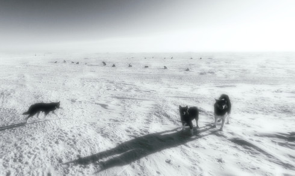

Nelly-Eve Rajotte
After
a first bachelor’s degree in art history, Nelly-Eve Rajotte went
for a second in visual and media arts at
UQAM, followed by a master’s in 2006. She is currently working
as an editor and art teacher in Montréal. Nelly-Eve
Rajotte’s images in motion bear witness to a research centered
on the concept of duality.
Images are generally split or superimposed before melting again
into another frame. The artist transforms the images she seizes,
reducing them to their formal components, altering them through
the modulation of captured lighting, compressing them at times
into horizontal bands. The image’s architecture is thus somewhat
visible and the juxtaposed soundtrack follows a similar motion.
APEX (single-channel version) – Canada 2013
7 min – HD – no dialogue – World Premiere
M+V: Nelly-Eve Rajotte – nellyeverajotte.com
Deconstruction of the power of the elements of landscape in search of verticality. The sound space is distorted so that it offers a signifier diverted to the image. The sound quotes ”Slow Water” by Brian Eno.

Blanc – Canada 2016
7 min – HD – no dialogue
M+V: Nelly-Eve Rajotte – nellyeverajotte.com
A robotic camera-eye flies high in the air over the sublime northern Canadian landscape.
{kind=link}
Claustrophobie des grands espaces (aircraft Boneyard) –
Canada 2016
5 min – HD – no dialogue – World Premiere
M: David Kristian – V: Nelly-Eve Rajotte – nellyeverajotte.com